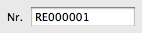

Beim Anlegen eines neuen Kunden, eines Produktes oder eines Dokumentes wird automatisch die Kunden-, Artikel- oder Dokumentenummer hochgezählt.
Für Kunden, Produkte und jede Art von Dokument kann ein unterschiedliches Format vorgegeben werden.
Als Platzhalter für die Nummer dient die Zeichensequenz: {Xnr}
Das X ist durch die Anzahl der Stellen zu ersetzen.
Die Zahl wird mit Nullen aufgefüllt, bis die Anzahl der Stellen erreicht ist.
RE{5nr}
erzeugt bei einer Rechnungsnummer '200' eine formatierte Rechnungsnummer von:
RE00200